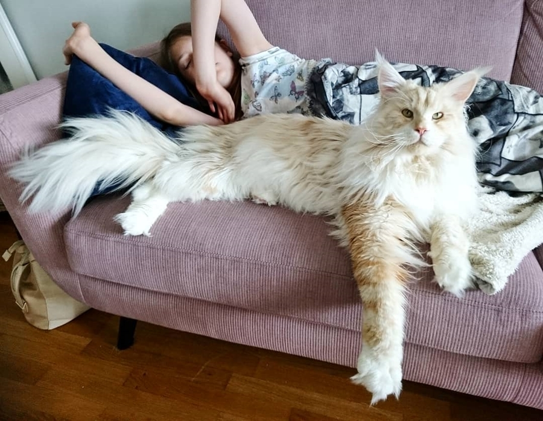
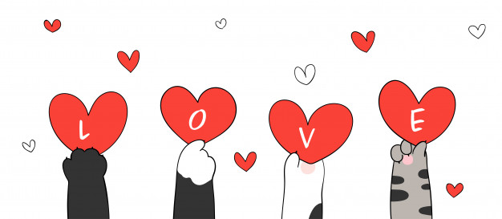
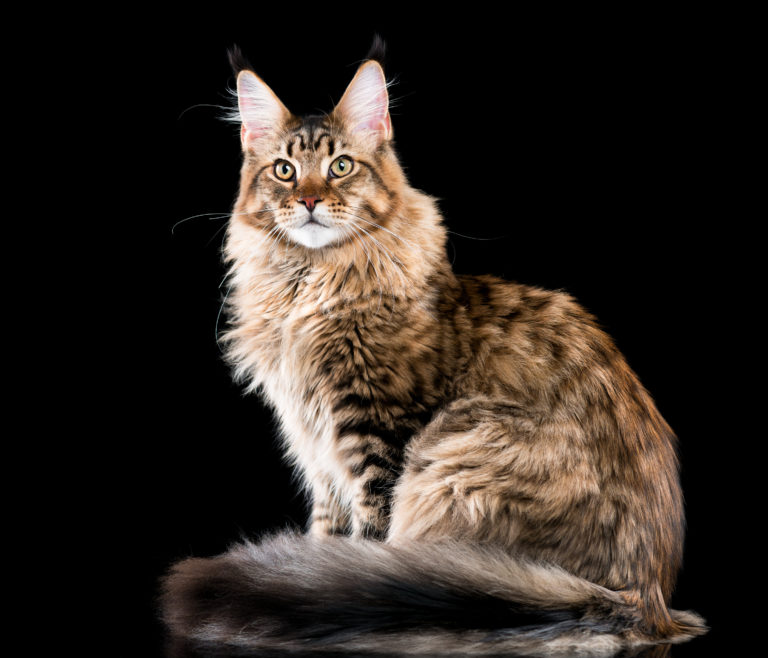

Maine Coon
Existen varias razas de gato, pero entre ellas esta una raza muy curiosa que se sale de lo comun de un gato y entre ellas esta el
La raza de gato mas grande del mundo.
Maine Coon
Maine Coon

Un Maine Coon junto a su dueña.
El Maine Coon es conocida por ser la raza de gato doméstico más grande del mundo. Tiene una apariencia física distintiva y valiosas habilidades de caza.
Es una de las razas naturales más antiguas de América del Norte, específicamente nativa del estado de Maine como su nombre lo sugiere, donde es considerado su gato oficial.
El gato Maine Coon se ha revelado como una de las razas de gatos más grandes. A nivel popular, incluso se llega a considerar que son los gatos domésticos, más grandes.
Ten en cuenta que los machos llegan a pesar entre 7 y 10 kilos y las hembras pueden alcanzar entre 5 y 9 Kg.
------------------Datos sobre los Maine Coon------------------
Caracter

Los maine coon son muy amigables y sociables. En caso de ser el único gato de la casa, este requiere mucha atención humana. Además, es una raza muy charlatana, es decir, sus arrullos y maullidos te acompañarán durante todo el día.
Son muy afables y tolerantes con otros animales y con los niños. Al adaptarse perfectamente a la vida de interior, estos gatos son ideales también para aquellos que cada día pasan varias horas fuera de casa.
Aspecto

El peso medio de los maine coon está entre los 6 y los 8 kg. Las hembras no deberían superar los 5 kg. Su cuerpo es musculoso y su pecho, ancho. Además, el cuerpo debe ser alargado y con forma rectangular.
Las patas de los maine coon son fuertes, musculosas, bien separadas, de longitud media y bien proporcionadas. Las patitas son grandes, redondas y llenas de mechones de pelo.
En algunos ejemplares, estos mechones son tan largos que sobresalen más de 2 cm entre los dedos.
La cola debería ser aproximadamente tan larga como el cuerpo.
AspectoAdfcercAkjde